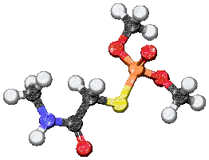

|  |
OntoBrowser
OntoBrowser is inspired from PROKINO onotology browser. This Browser is developed to browse a particular Ontology named Diseasome. Diseasome is awesome ontology which contains all the information about diseases and genes associated with that disease and prefered drug for that disease. It has all the information that anybody(individual or doctor) wants to know about disease. |
|